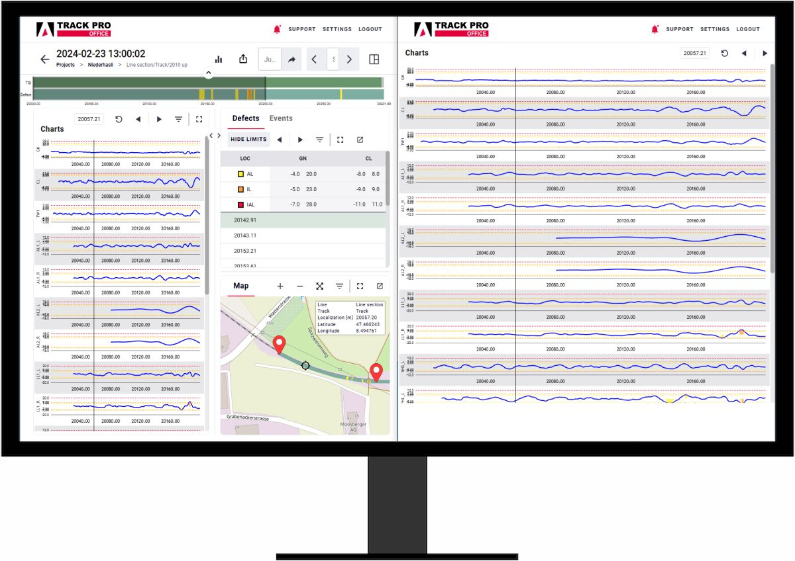

Career
Experience
Business Analyst, AVP
Jul 2024 – Present
- Communicate with stakeholders to understand scope and requirements, ensuring alignment with broad business objectives
- Translate business needs into clear and accurate system and technical requirements in the form of user stories
- Manage projects by establishing clear roadmaps and plans, monitoring resource utilisation and assessing risks
- Lead scrum ceremonies including sprint planning, retrospectives, and daily stand-ups
- Facilitate user acceptance testing (UAT) to ensure clients provide precise and timely feedback
- Cross-collaborate with UX designers to create prototypes ensuring clients can visualise upcoming features
Business Consultant
Aug 2021 – Jun 2024
Projects
Amberg Track Pro (Jul 2021 – Jun 2024) ↗ Amberg Technologies
Part of the core team from Sprint 1, contributing to the complete product lifecycle of a railway inspection desktop application. Defined workflows and user stories for a chromium-based app installer built using Advanced Installer bundling Erlang OTP, RabbitMQ, .NET (Kestrel), Redis, Node.js, and MongoDB, ensuring EN-13848 standard compliance for rail inspection.


CMS for SV Group — Europe-wide Restaurant Chain (Jul 2022 – Jun 2023) ↗ SV Group
Led business analysis for a centralised Content Management System managing content for 100+ restaurant outlets across Europe. Designed role-based permission matrices for marketing managers, branch managers, and editors. Enabled real-time microsite generation and deployment for individual outlets.
SV OTW — Sustainability Management Tool (Oct 2022 – Jan 2023)
Analysed and designed an internal web-based tool to track and evaluate daily food purchases and wastage across outlets. Enabled branches to log sustainability activities and generate reports aligned with SV's corporate responsibility goals.
Toffee Star Search — Banglalink OTT Platform (May 2022 – Jul 2022) ↗ Banglalink
Gathered and documented requirements for the Toffee Star Search microsite supporting Banglalink's entry into the UGC space. Delivered support for multilingual content, SEO optimisation, and leaderboard integration.
Repair Management Platform — Service7000 AG (Dec 2022 – Jun 2024) ↗ Service7000
Spearheaded business analysis for a repair and service request management system for tenants, caretakers, and apartment owners. Evaluated and optimised a non-scalable route optimisation algorithm to support real-world deployment for scalable multi-route scheduling.
Swiss Leaders (SKO) — Professional Exams Platform ↗ Swiss Leaders
Contributed to a digital platform for Swiss Leaders (formerly SKO), Switzerland's leading professional association for executives since 1893 with 10,000+ members. Supported the platform covering professional certification and leadership examination processes for Swiss executives and managers across industries.
Project Consultant
Field Information Solutions Ltd.
Apr 2020 – Jul 2021
- Responsible for development of features for a B2B last-mile distribution application
- Identify potential customers and facilitate the onboarding process for a seamless experience
- Communicated with end users to identify pain points and ideate new features
- Brainstormed new features by analysing needs of various customer segments to widen the user base
- Groomed product backlog to ensure user stories are complete and ready to be incorporated in sprints
- Conducted acceptance testing to validate features have met their acceptance criteria
Sales Coordinator, Operations & Business Research
AKS Khan Pharmaceuticals Ltd.
May 2018 – Mar 2020
- Analysed multiple product portfolios evaluating growth trends, breaking down overhead costs, and examining revenue generated for each product to identify profitability
- Monitored 13 outlet operations across Bangladesh consisting 150+ employees to identify prospective opportunities and pain points
- Coordinated customer tracking activities to identify service turnaround rates, onboarding rates, and percentage of recurring customers
- Identified effective distribution channels by observing seasonal demands, location and price sensitivities
- Developed cost targets for negotiations and negotiation strategies
Customer Service Manager (Part-time)
Grameenphone Ltd.
Jul 2015 – Feb 2016
- Managed customer service operations at a Grameenphone service centre
- Handled customer queries, complaints, and escalations
- Supported onboarding of new customers and product activations
Education
East West University (EWU)
Master's in Data Science and Analytics
Oct 2024 – Present
Bangladesh University of Professionals (BUP)
BBA, Major: Finance
Jan 2014 – Mar 2018